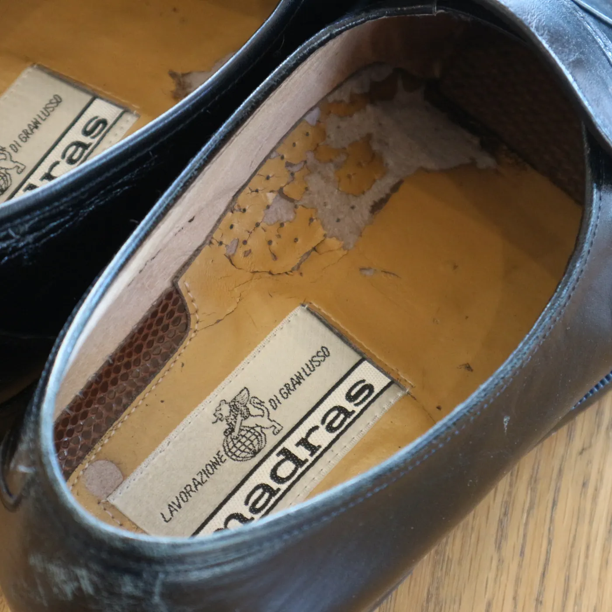
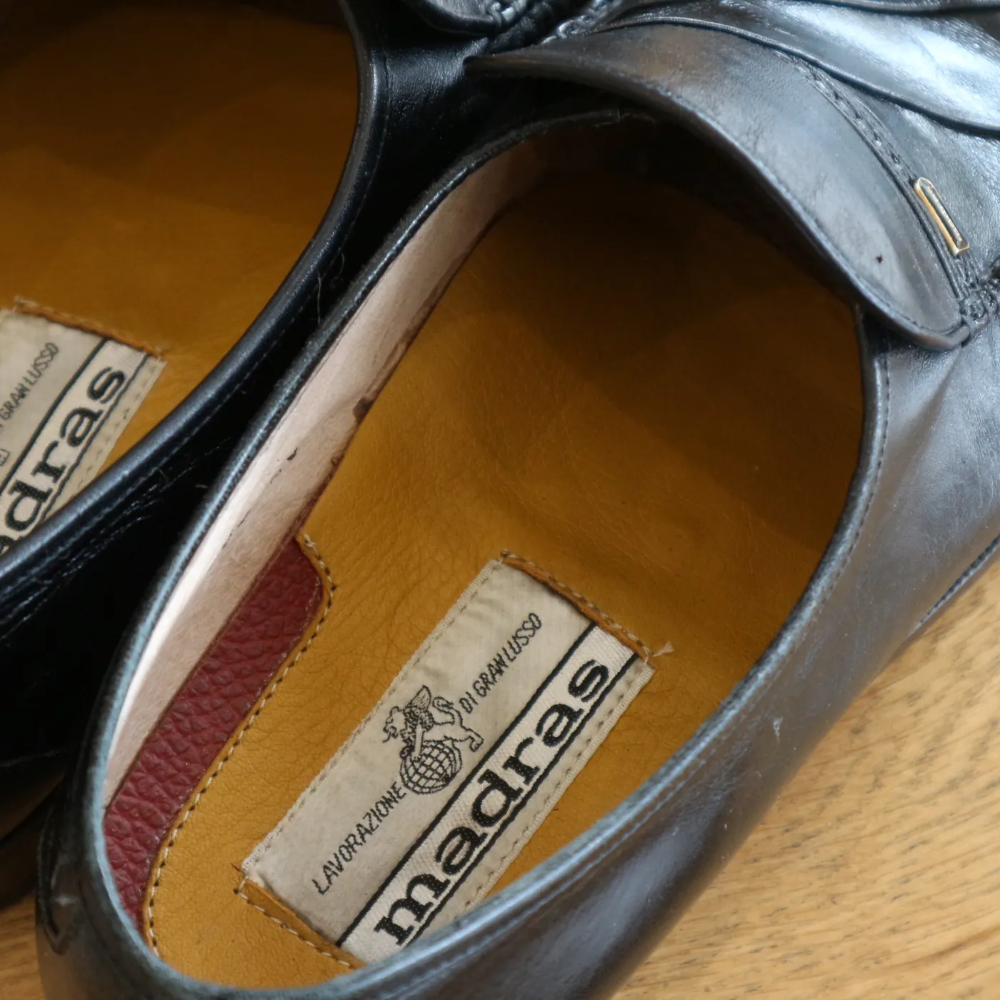
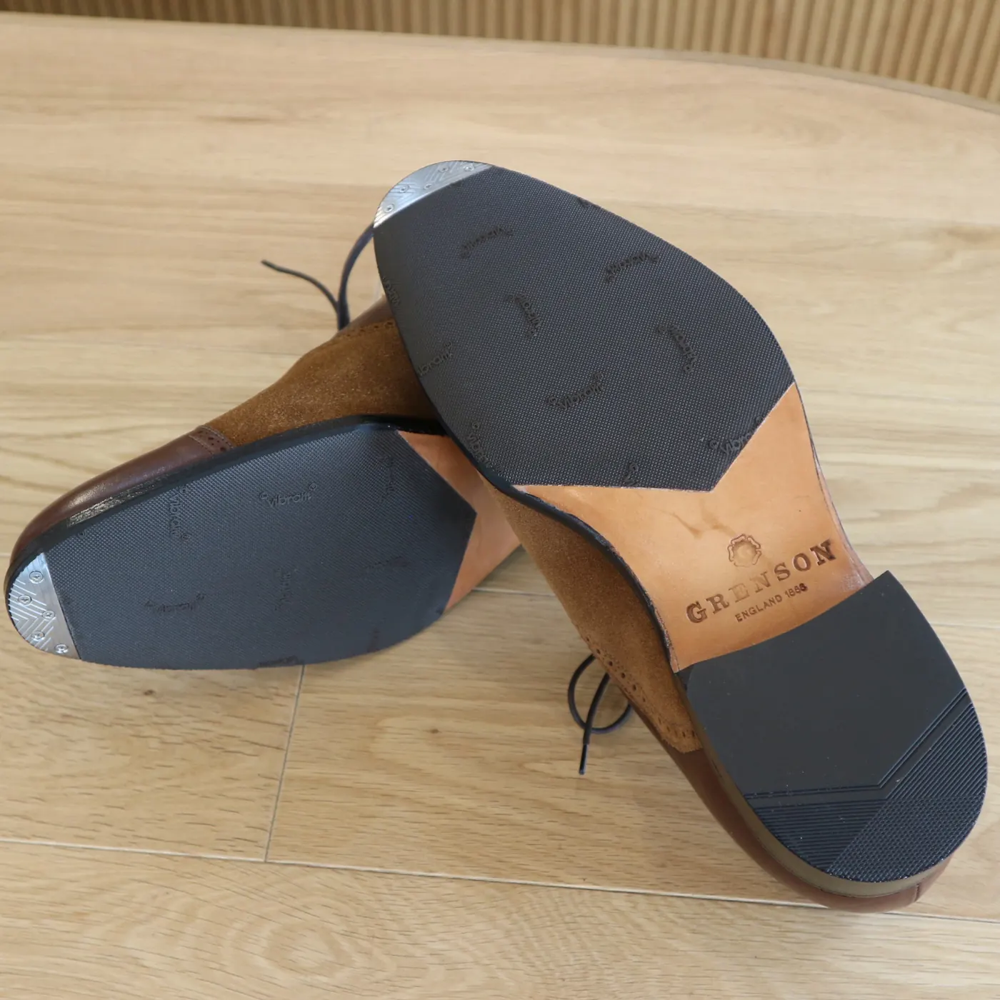
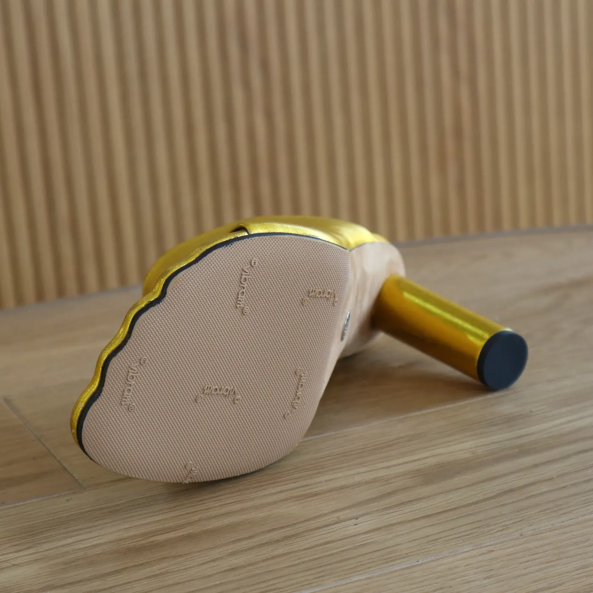
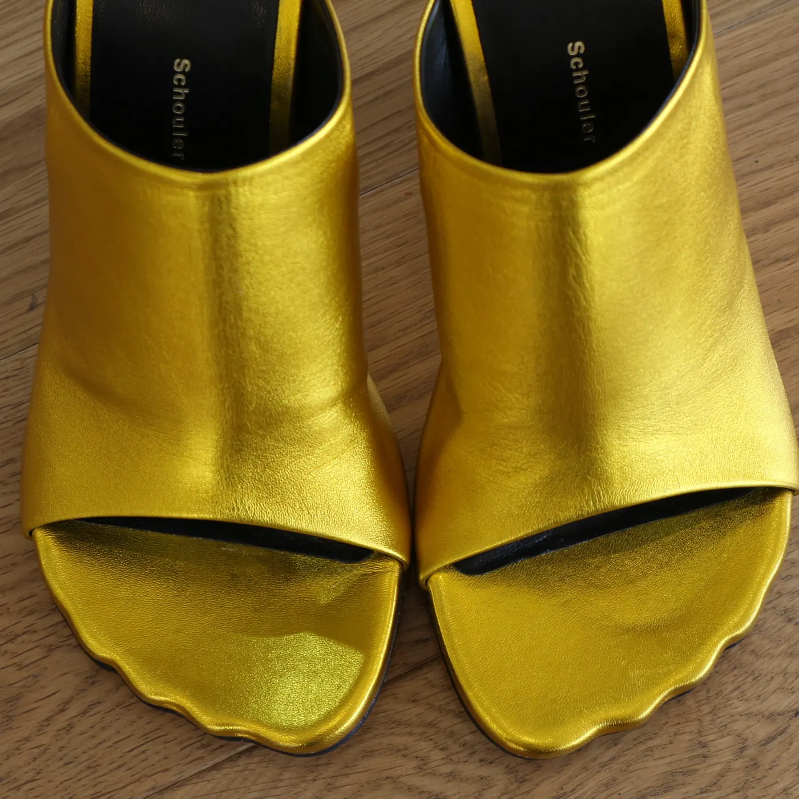
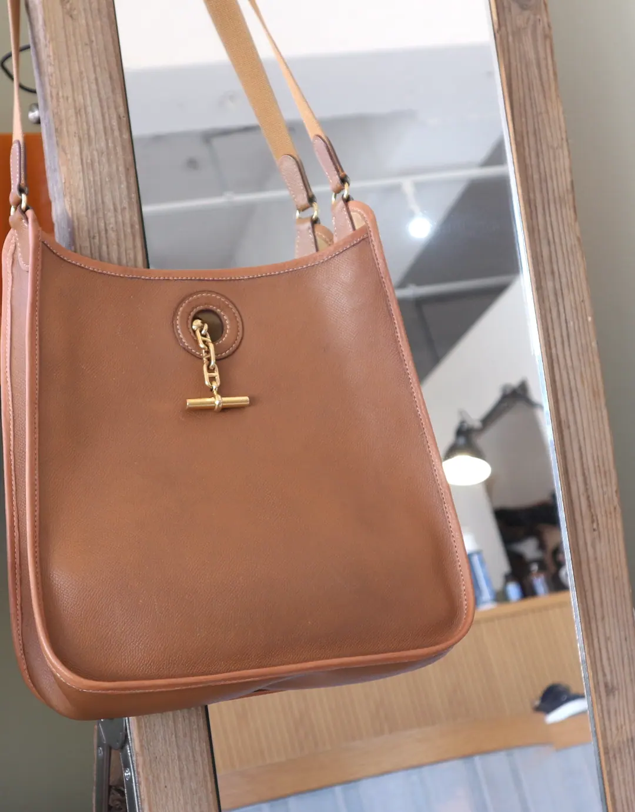
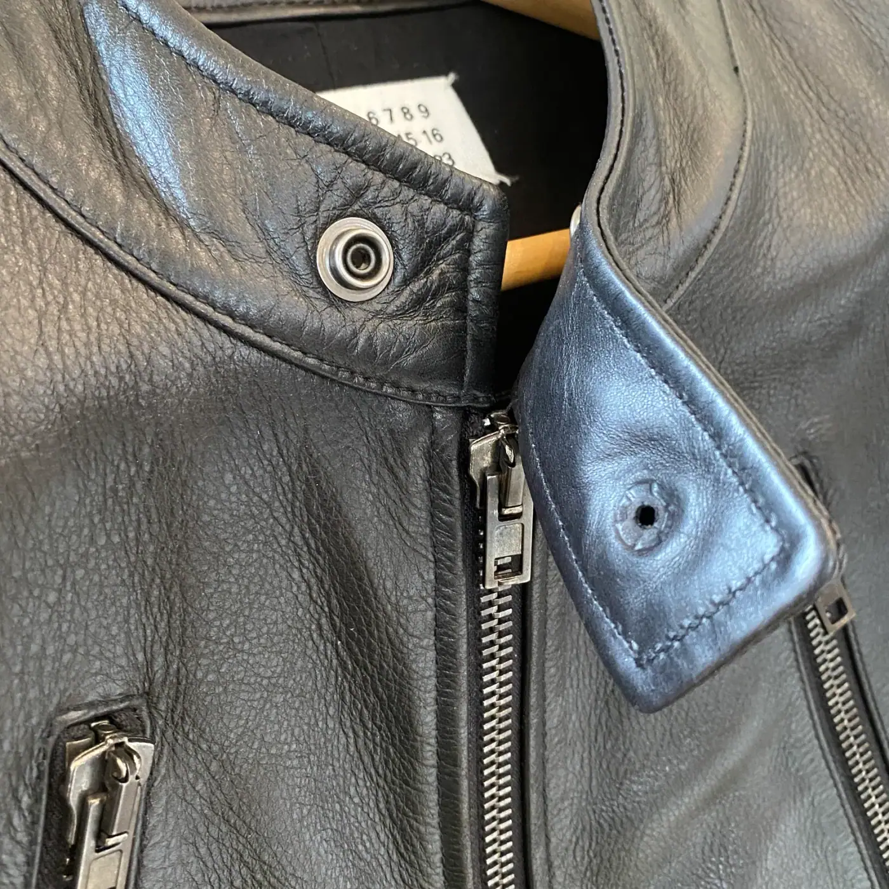
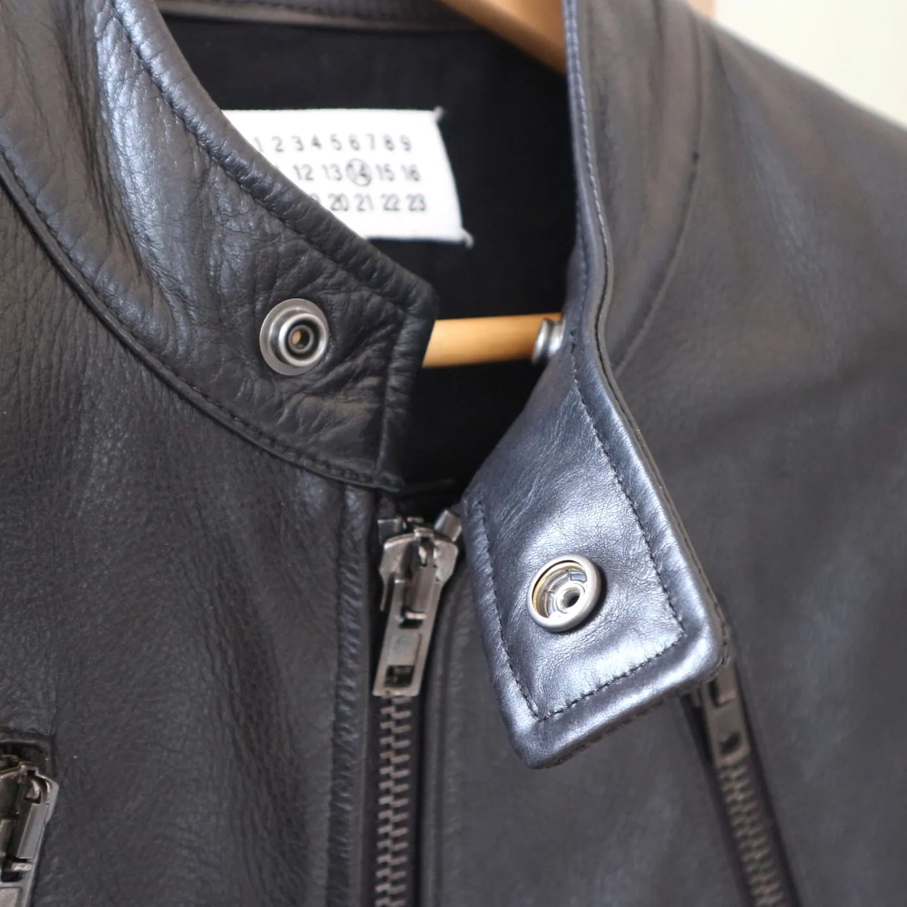
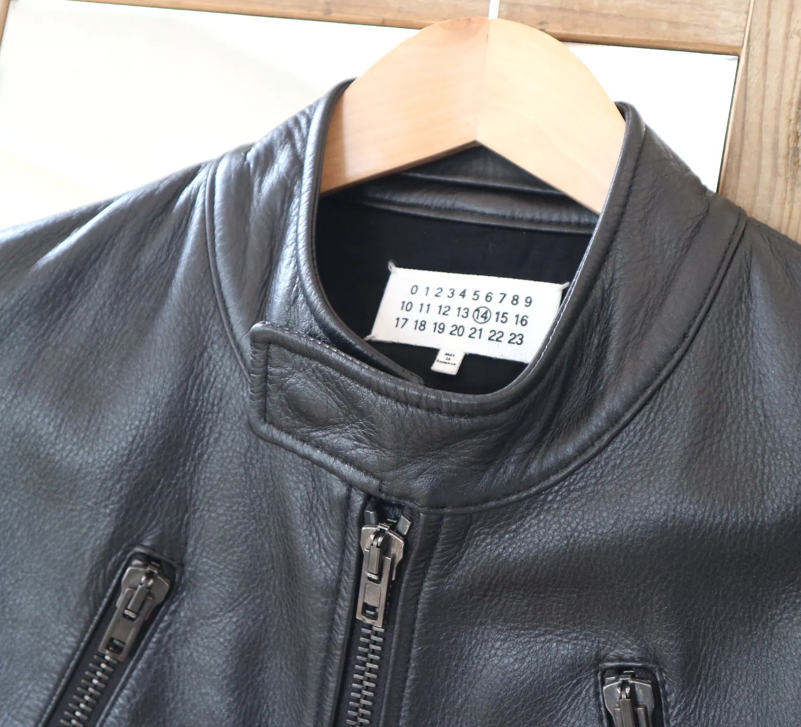

01 — Leather shoes
中敷き交換
中敷きの革が剥がれていた革靴です。中敷きを張り替え、ブランドのラベルは元の位置に残しています。


01 — Leather shoes
中敷きの革が剥がれていた革靴です。中敷きを張り替え、ブランドのラベルは元の位置に残しています。



02 — Suede shoes
スエードの短靴に、ビブラムのハーフソールを貼りました。つま先には金具を合わせ、土踏まずの刻印はそのまま残しています。
03 — Mules
ゴールドのミュールです。波形のつま先に沿って、ビブラムのハーフソールを貼っています。



04 — Shoulder bag
縁のパイピングを交換したショルダーバッグです。色とステッチの間隔を、本体の革に寄せて縫い直しています。
05 — Leather jacket
襟元のスナップが外れていたレザージャケットです。革の厚みに合わせて金具を付け替え、閉じたときの位置がずれないようにしています。



Contact
お写真を送っていただくと、概算のお見積りが可能です。